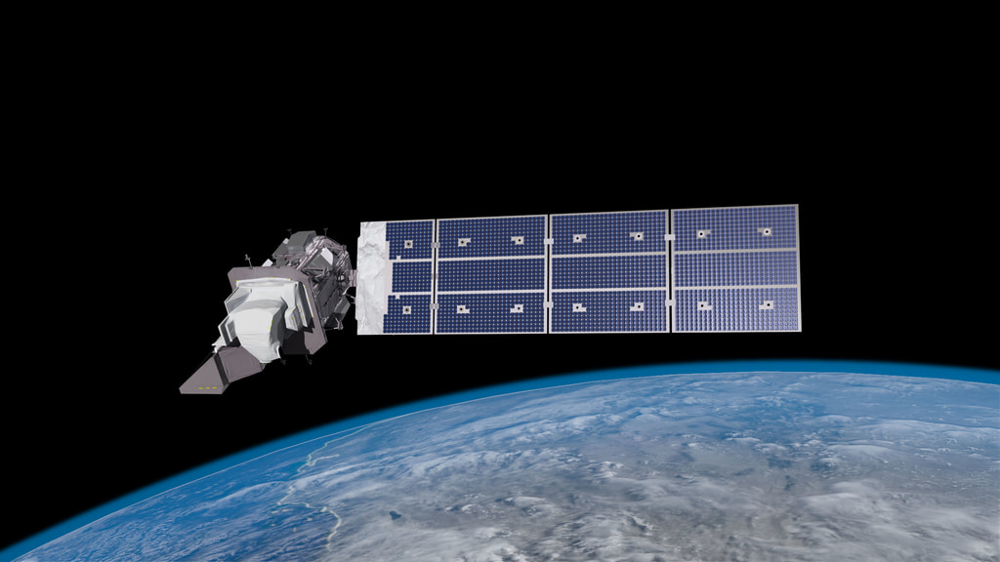
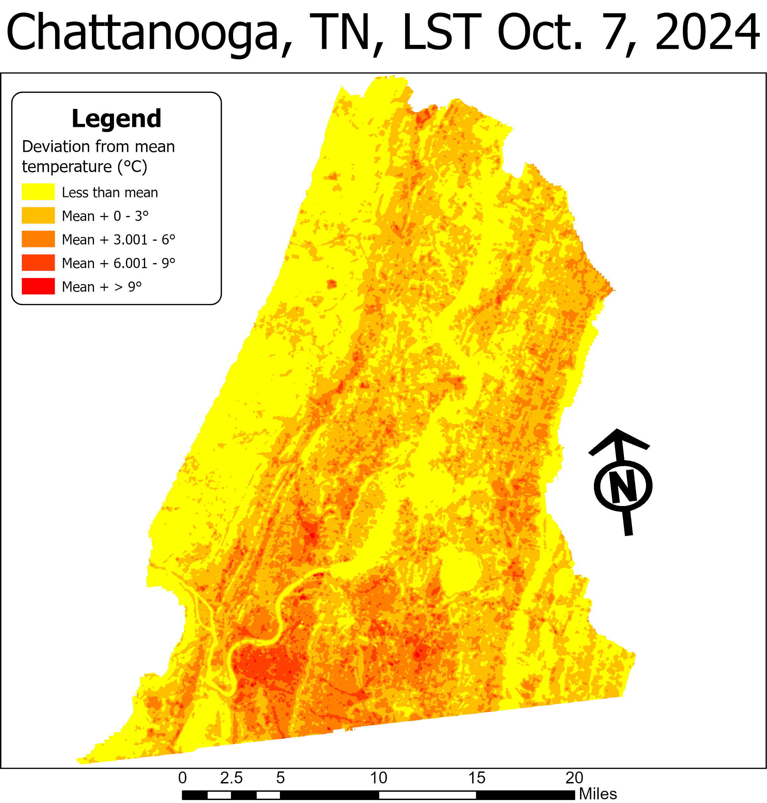
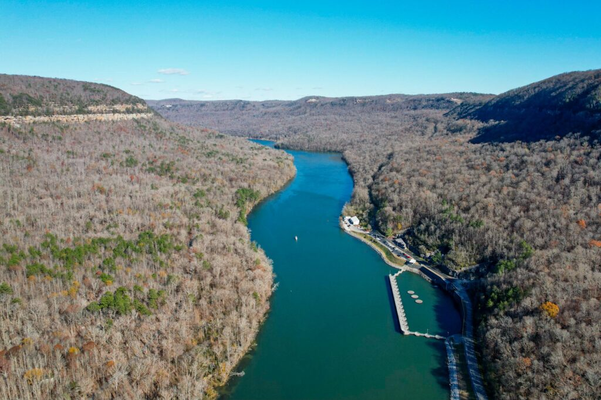

The Geological and Environmental Remote Sensing Lab (GERSLab) focuses on the geological and environmental applications of GIS, remote sensing (optical and microwave), and spatial analysis coupled with numerical modeling. Our interests lie in coupling geospatial technologies with numerical models to better understand our physical environments and the impact of human-environment interactions.
Our current work focuses on developing remote sensing (satellite observations) and GIS based models to estimate surface water quality, map and monitor urban growth, understand urban heat island (UHI) impacts, and predict landslides.


Pure scientific discovery and regional applications are the two primary motivating factors of our research. The lab is based in Chattanooga, Tennessee with a strong research focus on the Tennessee River.